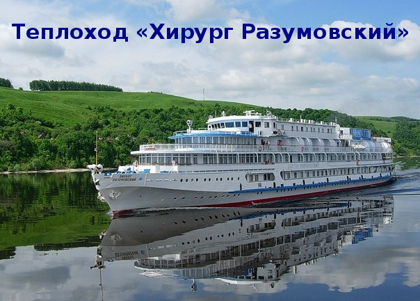

Изысканный теплоход «Хирург Разумовский» — образец комфорта для взыскательных персон.
- Собственные балконы в каютах на шлюпочной палубе.
- У нас на борту — салат-бар, спорт-бар, бонусная карта клиента и детское заказное меню.
- Кроме того, малышей на теплоходе ждут игровые программы, детские часы и круизная мастерская «Своими руками».
- Простор, уют, удобство и комфорт — основные составляющие этого теплохода!